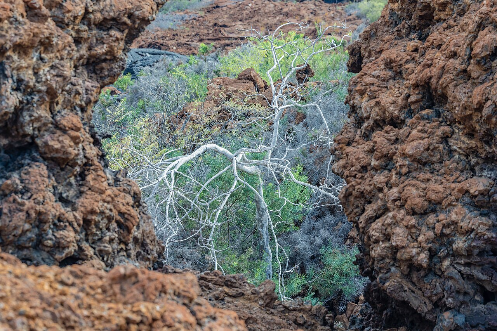
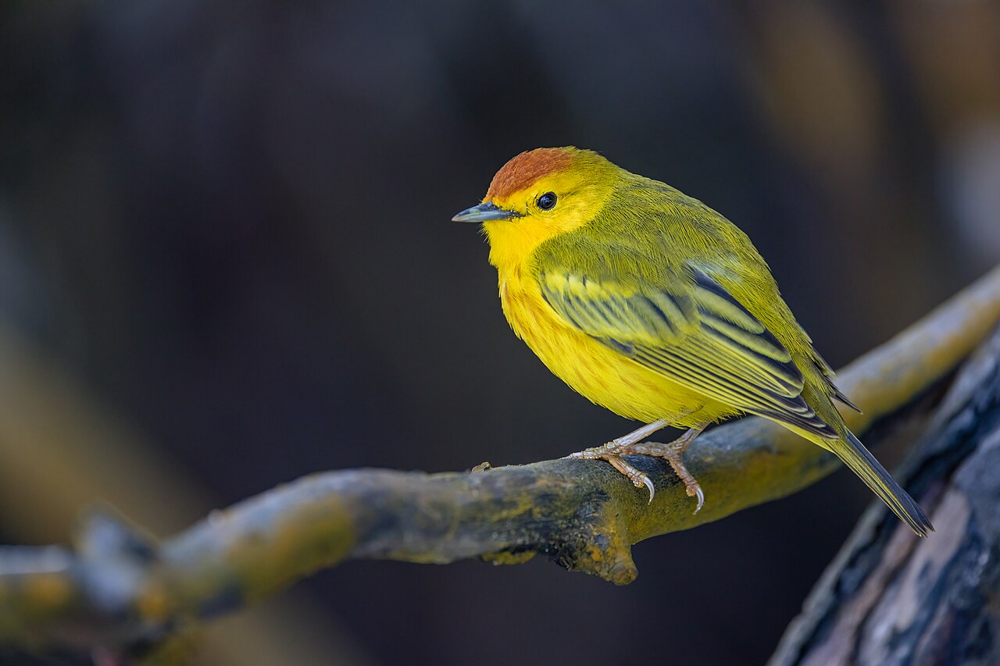
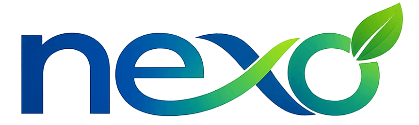
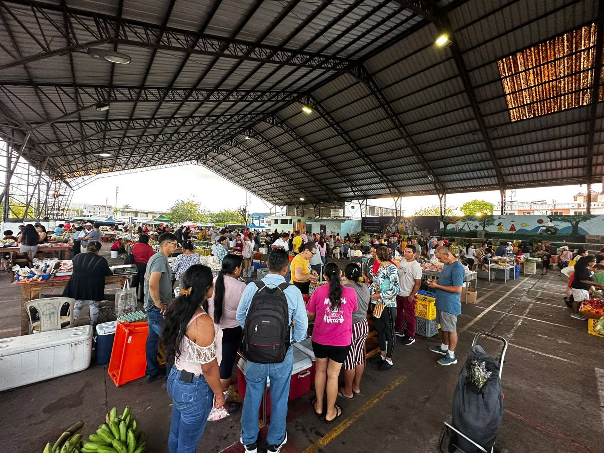
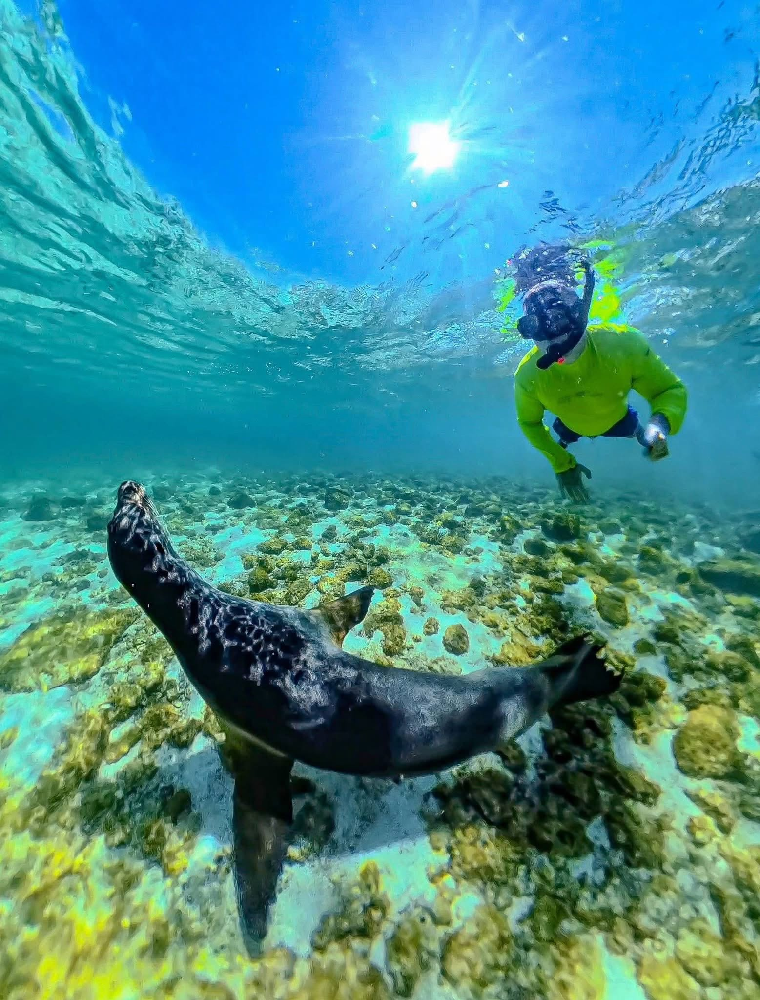
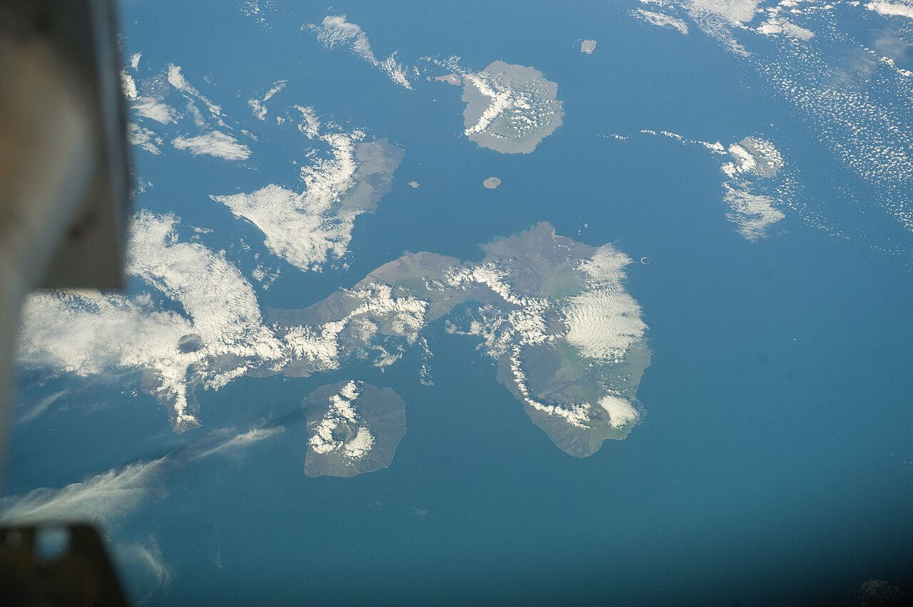
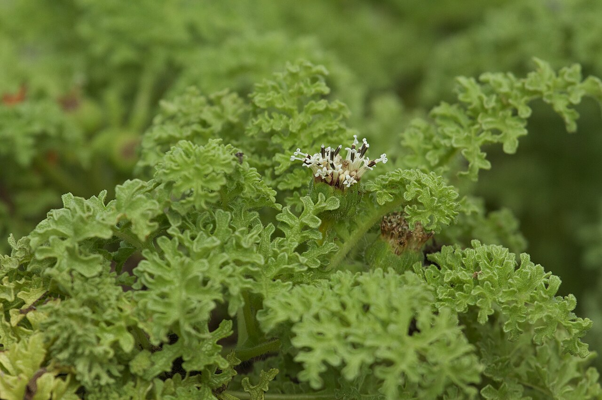
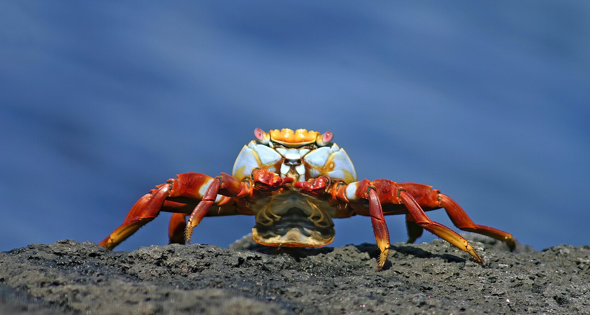
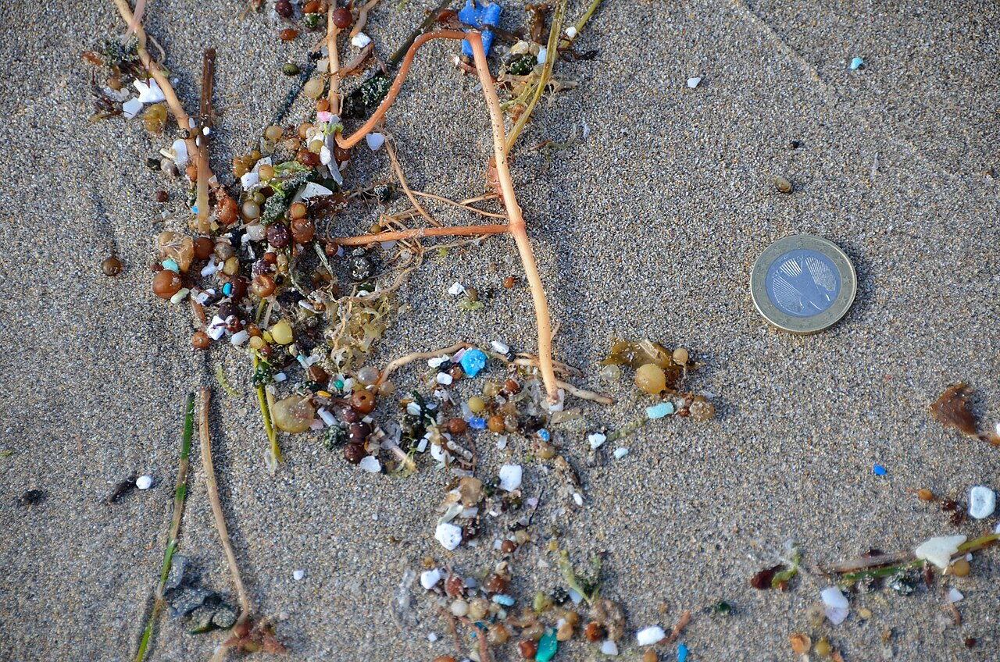
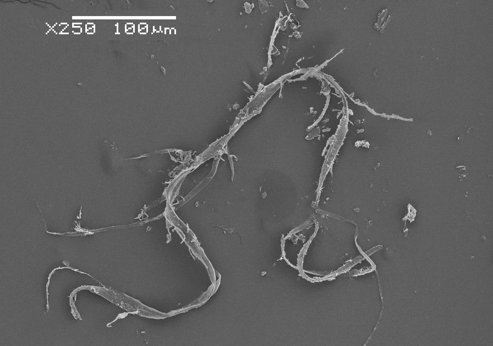

Naturaleza
Dimensión de capacidad en gestión ambiental, conservación de la biodiversidad, áreas protegidas, planificación territorial, gobernanza y soluciones basadas en la naturaleza.


Sostenible Conectamos naturaleza, economía, bienestar y futuroTransformamos conocimiento en soluciones que protegen la naturaleza, fortalecen las economías locales y mejoran la calidad de vida.
Ante cada desafío, combinamos cuatro dimensiones de conocimiento y experiencia para analizar, diseñar y construir soluciones integrales que conectan estrategia, naturaleza, personas e innovación.

Dimensión de capacidad en gestión ambiental, conservación de la biodiversidad, áreas protegidas, planificación territorial, gobernanza y soluciones basadas en la naturaleza.

Dimensión de capacidad en planificación estratégica, formulación y evaluación de proyectos, análisis socioeconómico, modelos de gestión y financiamiento sostenible, incorporando la valoración del capital natural y sus beneficios económicos.

Dimensión de capacidad en desarrollo humano, participación, fortalecimiento institucional y soluciones orientadas a generar beneficios sostenibles para las personas y las comunidades.

Dimensión transversal orientada al diseño y mejora de procesos y al desarrollo de soluciones digitales. Integramos aplicaciones web, bases de datos, automatización, análisis de datos e inteligencia artificial para optimizar procesos, organizar información y fortalecer la gestión y la toma de decisiones.
Más de 25 años de experiencia
Nuestra experiencia se ha construido en Galápagos trabajando directamente en planificación estratégica, proyectos, conservación, bioseguridad, desarrollo territorial, agricultura, pesca, gestión de residuos sólidos y fortalecimiento institucional.
Hemos participado en la formulación y gestión de proyectos, presupuestos e inversiones; cooperación internacional; manejo integral de residuos y saneamiento ambiental; desarrollo productivo; conservación de la biodiversidad y procesos de transformación institucional y digital.



